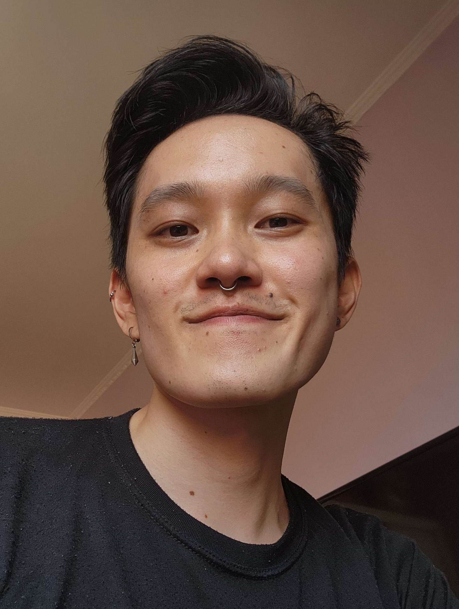

PRINCIPAL INVESTIGATOR
 Fabio A. Machado
Fabio A. Machado
I am an Assistant Professor in Integrative Biology and curator of the Colection of Vertebrates (COV) at Oklahoma State University. My background is in mammalogy, morphometrics, quantitative genetics, phylogenetic comparative methods and systematics.
Office: LSW 304/305
contact: fabio.machado@okstate.edu
GRADUATE STUDENTS
 Jonathan Maycol Branco
Jonathan Maycol Branco
I am a PhD student in Integrative Biology at Oklahoma State University. My background is in animal ecology, data science, one health and science outreach. I am particularly interested in the effects on wildlife's ecology and physiology caused by environmental factors such as landscape configuration, climate change, and contaminants.
 Simran Baruwal
Simran Baruwal
Simran is a PhD student at the EMORPH2 lab. She is interested in investigating drivers of diversification at macroevolutionary scales.
 Andrew Hughes
Andrew Hughes
I am a Master’s student in Integrative Biology at Oklahoma State University. I am interested in mammalogy, morphology, anthropogenic effects on fauna, and biogeography. I have a background in mammalogy and collections.
 Kayleen Sugianto
Kayleen Sugianto
I’m a zoology major here at OSU with a drive to show the world how incredible wildlife is! I joined the research world the summer of my sophomore year of college, working on cricket and frog projects. Now, as I begin my adventure into graduate school, I am to study the painted lady butterflies and what effects climate change has on them. Besides the busy life of a researcher and student, I enjoy spending time with family and friends, and have a passion for baking!
 Monique Maianne
Monique Maianne
I am a PhD candidate at the University of São Paulo (Brazil). My main research interest is to understand the patterns and underlying causes of floral morphological diversity in mimosoid legumes. To achieve this, I combine phylogenetic, morphological, and ecological data to disentangle the influence of multiple factors on the evolution of Mimosa floral morphology (Leguminosae).
 Takeshi Goto
Takeshi is a masters student from University of São Paulo (Brazil) studing macroevolutionary dynamics of plants inhabiting the Brazilian savannah (Cerrado).